Project Description:
Patients often struggle to understand when and where to complete their lab tests, resulting in high clinic call volumes and delays in care. We integrated Labcorp into the Providence mobile app to streamline the lab booking experience and support timely follow-through.
Role:
Lead Product Designer
Duration:
8 months
Impact:
Launched Providence’s first ecosystem partner integration - a milestone in creating a more interconnected patient care journey. Improved both 7-day and 30-day lab completion rates.
Introduction
The Providence mobile app is the one-stop shop for everything Providence. It plays a central role in the health system’s efforts to improve the patient experience and drive operational efficiency through technology.
In March 2024, I joined the mobile app team as the lead designer for the Next Best Action (NBA) initiative. Our goal was to help patients proactively manage their care and complete important health tasks.
One of our key opportunities was improving the lab booking experience.
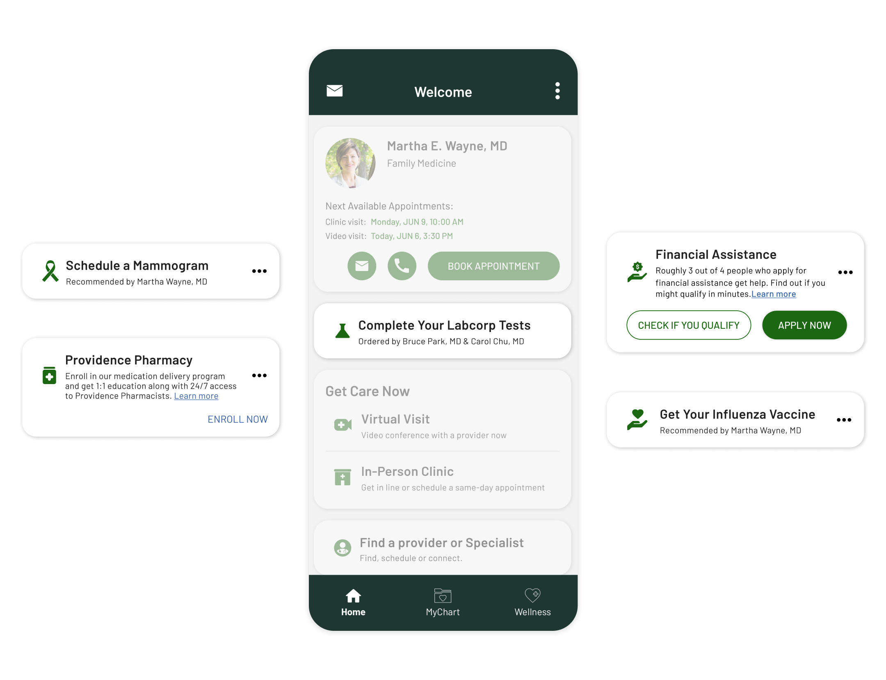
Examples of Next Best Action cards
Problem Space
Patients lack clarity on when labs are ordered and where to go, leading to missed labs and increased clinic calls.
Some patients are unaware of the lab tests they need prior to an upcoming appointment. Others don’t know which lab agency their orders were sent to, such as LabCorp or Quest Diagnostics.
As a result, patients may miss required labs or arrive at lab locations without an order on file, leading to clinic calls and delays in care.
Design Response
An end-to-end in-app lab booking experience.
Patients stay informed, take action, and complete their labs without needing to call their care team.
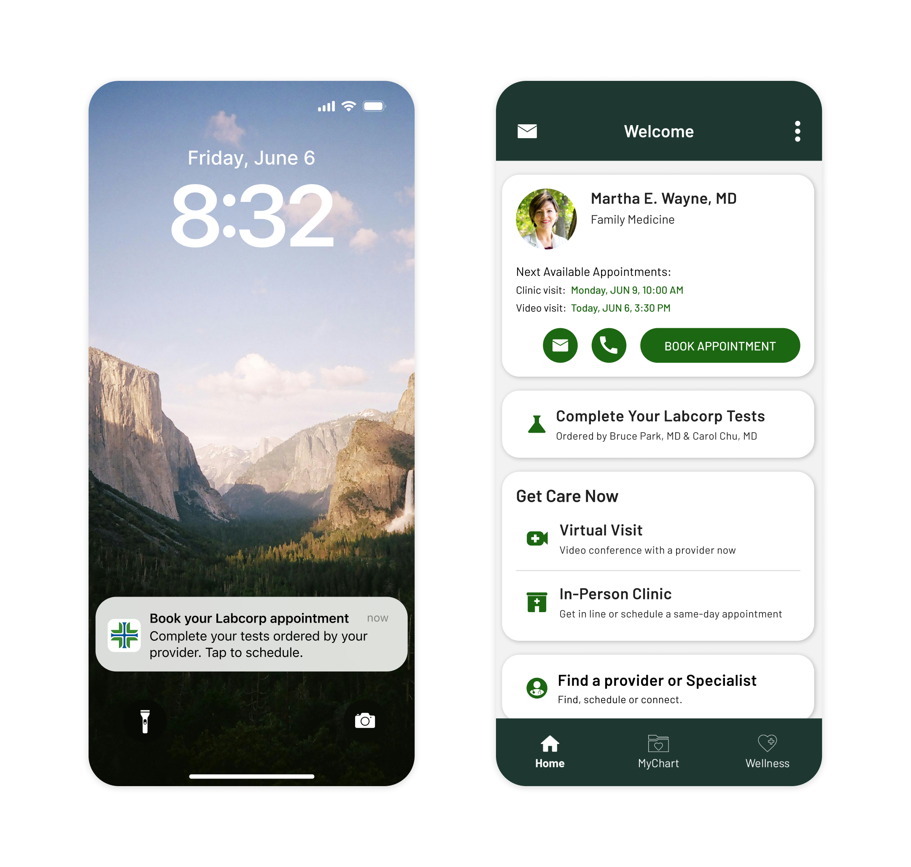
Notify patients of lab orders
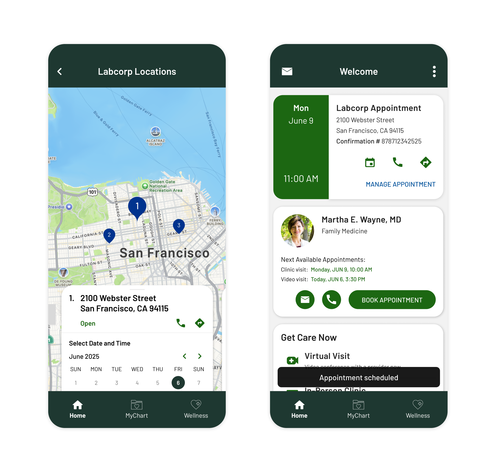
Make it easy to schedule a lab appointment
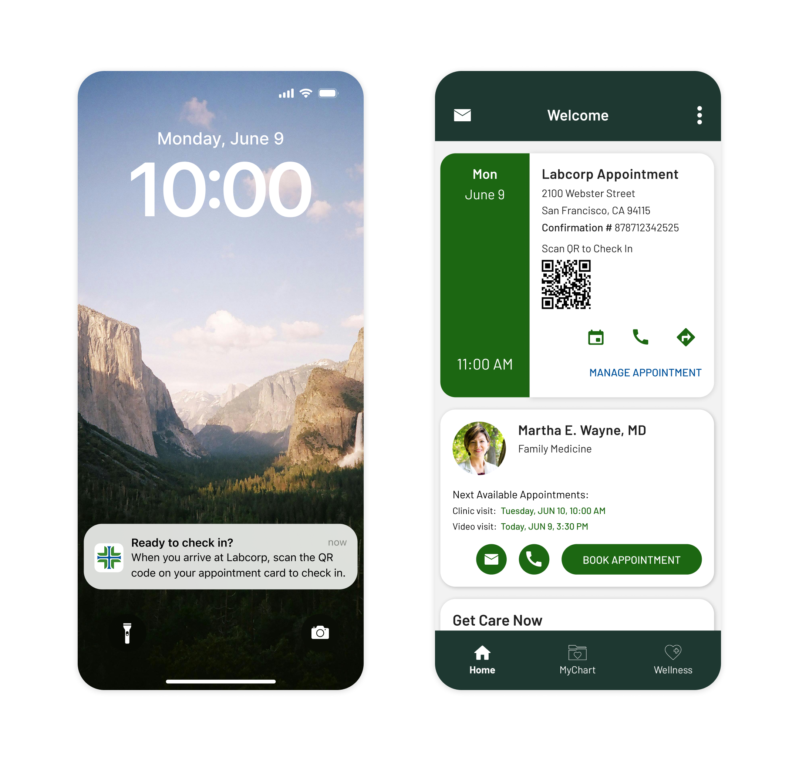
Follow-through on completing labs
Impact
The LabCorp integration led to an improvement in lab completion rates.
Patients using the Providence app showed a slight increase in 7-day completion and a significant rise in 30-day completion compared to those using MyChart.
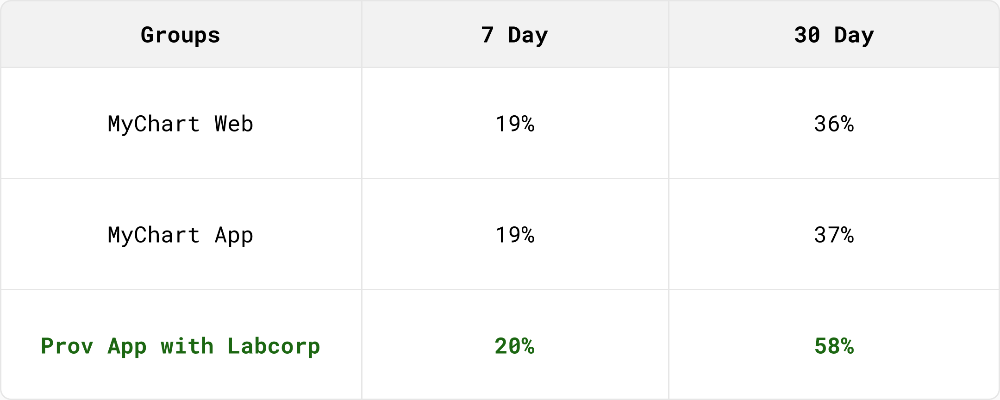
Lab completion rate table
Ultimately, higher lab completion rates reflect progress toward our goal of improving the patient journey while easing the workload for care teams.
How did we get there?
The Journey
Setting the Context
The path to launch was anything but linear. It involved collaborating with our mobile app vendor, navigating Labcorp’s capabilities, evolving priorities, technical constraints, and many design iterations.
Praia - Our Mobile App Vendor
The Providence mobile app is built on Praia’s consumer health platform. Praia was spun out of the Providence Digital Innovation Group in 2024.
As both a customer and close partner, we help define the product and design specifications for new features and then submit them to Praia for implementation.
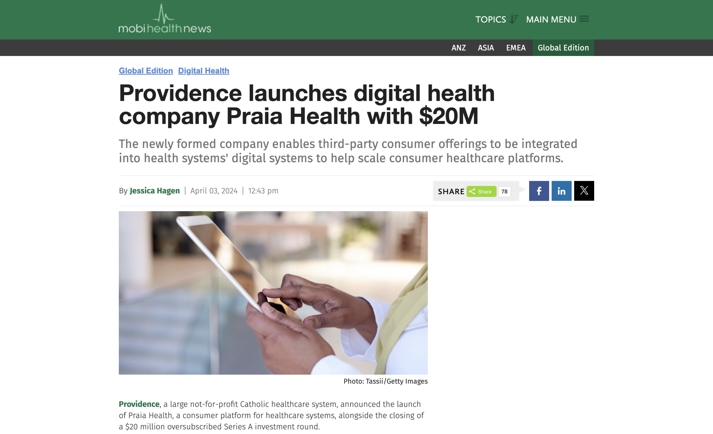
News article announcing the launch of Praia
Labcorp - Our Ecosystem Partner
Healthcare is a fragmented industry. Patients often interact with multiple hospitals, doctors, pharmacies, and labs.
To close these gaps, Providence is expanding its digital ecosystem through strategic partnerships with organizations that provide valuable services to patients.
In April 2024, our partner LabCorp shared that they were building a lab scheduling API — an opportunity that aligned with our goal of improving the lab experience in the Providence app.
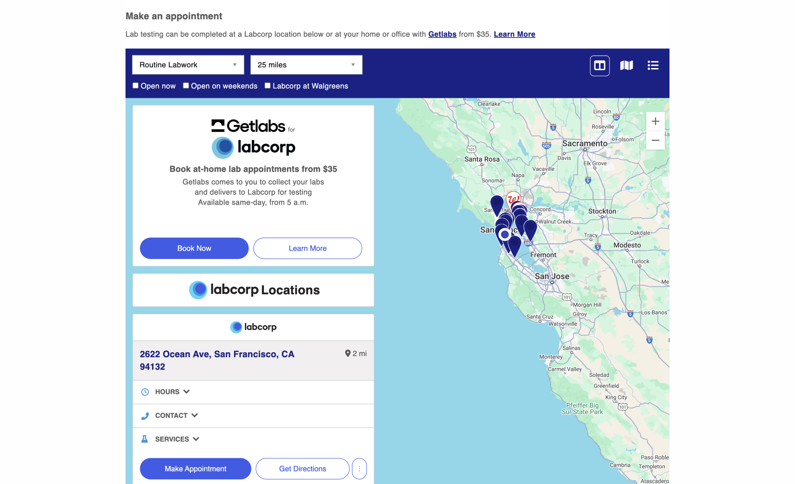
Labcorp's lab search experience
The Lab Booking Challenge
Patients often lack clarity on when labs are ordered, which tests are needed, and where to go.
Roughly 10% of the time, doctors send lab orders to different agencies like LabCorp or Quest Diagnostics.
As a result, patients may miss labs, make duplicate visits, or arrive without an order on file. This leads to increased clinic calls and delays in care.
Defining Success and Scope
Our primary key performance indicator was lab completion rate, which is the percentage of patients who complete their lab orders within a specific timeframe. We tracked both 7-day and 30-day completion to measure short- and longer-term follow-through.
To support this goal, we scoped the MVP experience around two key actions: notifying the patient of new lab orders and making it easy to schedule. Since Providence works with three lab agencies, we needed to create an experience that scales across each one.
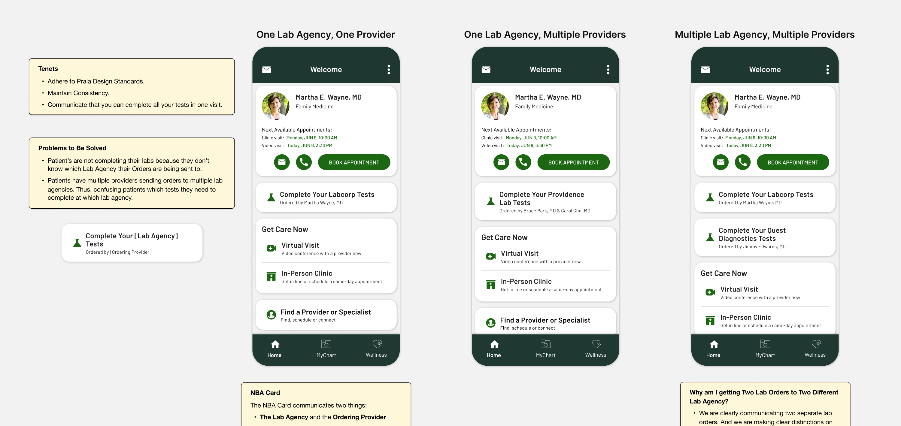
Documenting requirements and rationale alongside mockups
Designing Within Constraints
One of our early challenges was the uncertainty around Labcorp’s scheduling API. While they confirmed it was in development, we had no insight into what data it would require or return.
Given the unclear timeline and our target to launch by the end of June, we needed to move forward with a solution that worked within existing constraints. Early designs focused on a deep link experience, directing patients to each lab agency’s scheduling page.
Despite the uncertainty, I still wanted to design for the ideal integrated experience. I created early concepts based on Labcorp’s existing scheduling flow so we’d be ready when their API became available.
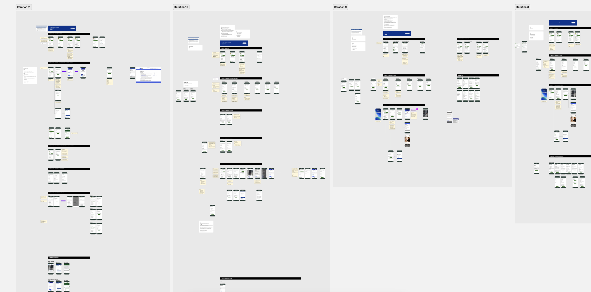
Many iterations shaped by design feedback and clinical input.
MVP Pivot
In mid-May, I presented designs for an ideal scheduling experience that would eventually use LabCorp’s API. I advocated for this approach as the best way to help patients complete their labs.
Although implementing the API would delay launch, our VP of Product chose to move forward with it as part of the MVP. I shifted focus to support that direction and worked with product to prepare for handoff.
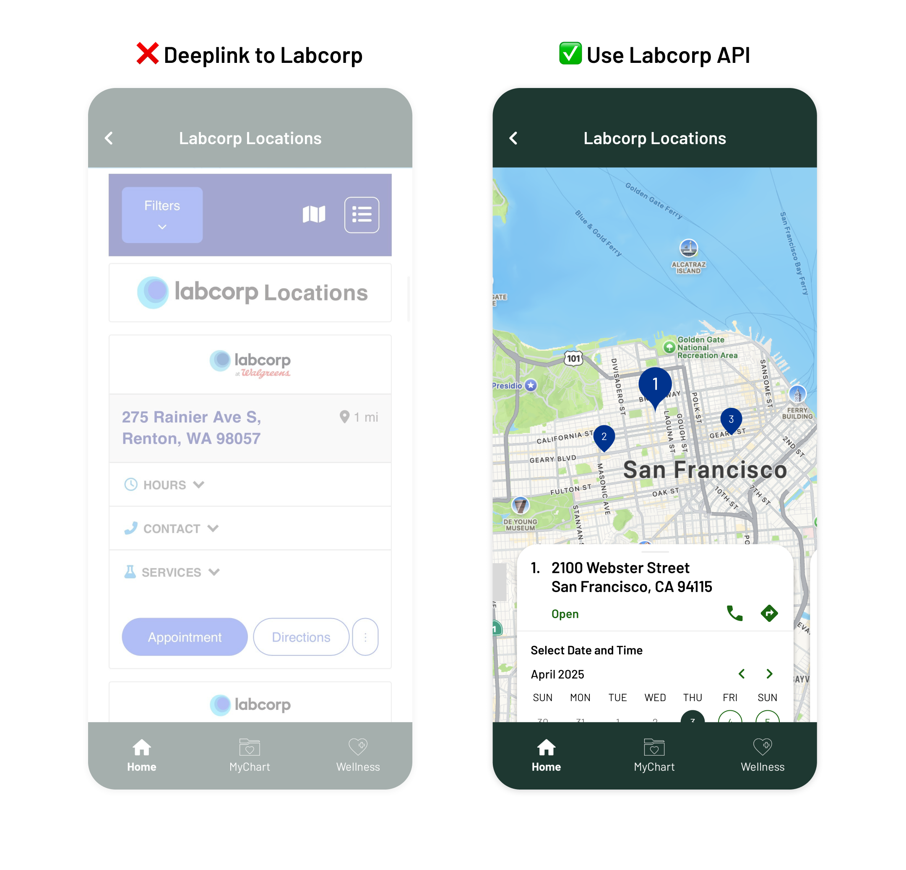
Commit to using the Labcorp scheduling API for MVP
Design Handoff to Praia
Because this was a net-new feature, implementation required Praia’s involvement. I worked closely with the Providence app product owner to define design specs and use cases.
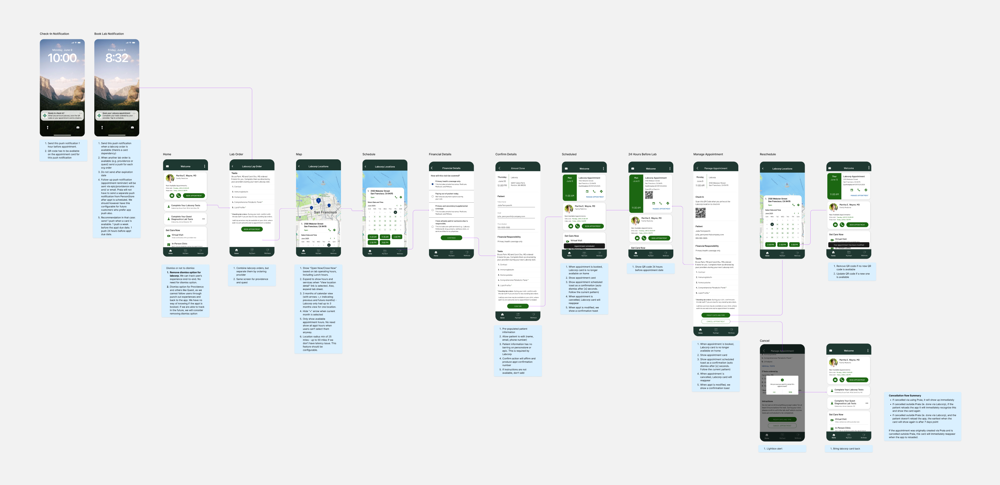
The end-to-end happy path flow
Bug Bashes and UX Desk Checks
I joined multiple rounds of bug bashes to identify gaps and ensure the experience met expectations. Early rounds surfaced blocking issues that affected core flows and needed to be resolved before launch. I provided design direction and clarified specs to help maintain a high-quality patient experience.
From Launch to Results
We launched the lab booking experience and Labcorp integration on November 21, 2024 - a major milestone for the Providence app as its first ecosystem partner integration.
Post-launch, we saw a notable improvement in lab completion rates. Patients using the Providence app had a 58% 30-day completion rate, compared to 37% for those using MyChart.
We also saw the highest engagement of any NBA card at a 39.2% click-through rate.
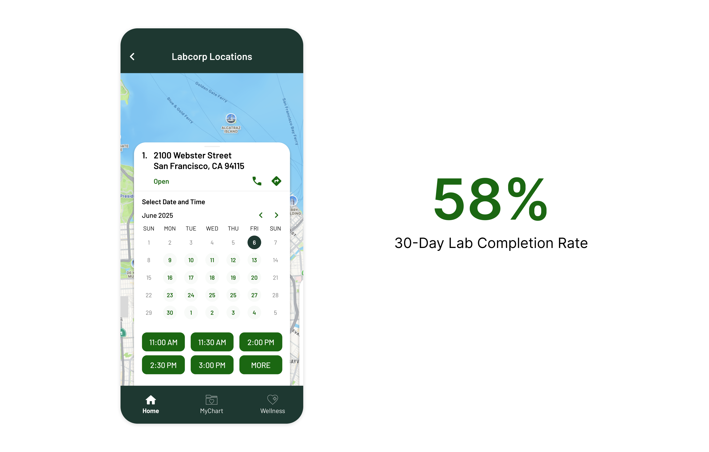
Labcorp integration outcome
Key Learnings
Document your sad paths and edge cases:
Leading with the happy path helps drive clarity and momentum, but supporting end-to-end flows means planning for what happens when things don’t go as expected. What if a patient has location services turned off? What if they miss their appointment? Defining these scenarios early helps create a more refined experience.
Balancing deadlines with impact:
Meeting deadlines is paramount. However, delivering an experience that best helps patients can override a target date. In this project, we chose to delay launch to include the LabCorp integration, which made the feature significantly more useful. It was a reminder that pushing back a release can be the right call when it leads to better outcomes for patients and care teams.